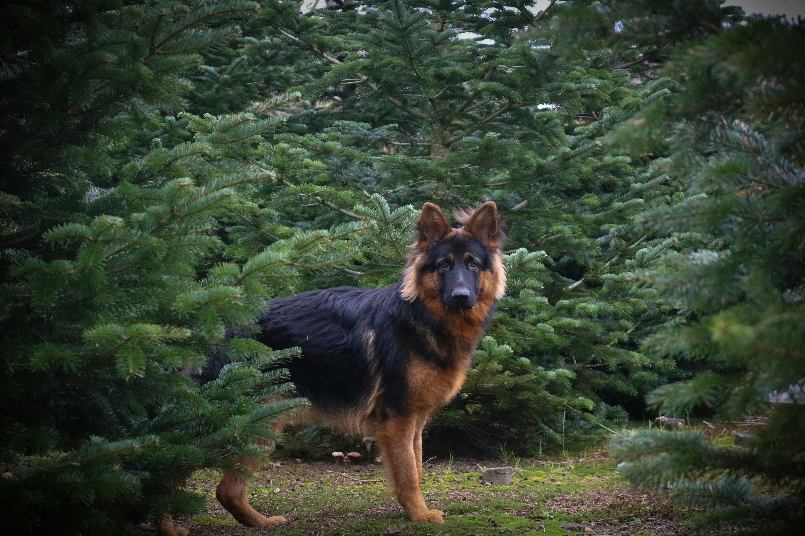

Німецька овчарка
Німецькі вівчарки — одна з найбільш популярних порід у світі. Зовнішність цього собаки видає мускулистого, пильного, благородного і стриманого захисника. Це спритні собаки, з гарними пропорціями, які рухаються з гордістю.
Німецькі вівчарки — одна з найбільш популярних порід у світі. Зовнішність цього собаки видає мускулистого, пильного, благородного і стриманого захисника. Це спритні собаки, з гарними пропорціями, які рухаються з гордістю.
Німецька вівчарка дуже прив'язується до свого власника і захоче бути з ним/нею якомога більше. Хоча цій породі і потрібно приділяти багато уваги, пес віддячить вірністю та своєю непідкупною охороною. З іншого боку, якщо ви не знайдете часу на соціалізацію та дресирування вівчарки, виникнуть проблеми із впевненістю у собі та непокірністю. Цей собака прагне вчитися і дуже легко піддається дресируванню, тому він має бути слухняним учнем на тренуваннях.

Країна походження: Німеччина
Німецька вівчарка — результат схрещування різних порід вівчарок — спочатку була виведена для пасіння і дата її появи сходить ще до VII століття. Німецьких вівчарок вперше показали на виставці у 1882 році, а в 1899 році був створений Verein fur Deutsche Schaferhunde, тобто Німецький клуб цієї породи. Саме завдяки цьому клубу німецьких вівчарок стали використовувати в поліції та збройних силах, тим самим врятувавши породу від вимирання у важкі часи на початку XX століття. Під час Першої світової війни німецькі вівчарки носили на фронті послання та допомагали знаходити поранених. Солдати союзників були у захваті від розуму та мужності собак і привезли багатьох з них додому після війни, тим самим закріпивши породу в інших країнах.
Молодого цуценя слід тренувати з обережністю, щоб уникнути тривалого пошкодження ще м'яких суглобів. Дорослій німецькій вівчарці знадобляться понад дві години повсякденного навантаження, а також можливості використовувати свій інтелект під час тренувань та ігор, що розвивають мозок.
Тривалість життя: 12 – 14 років
Вага: 20 – 30 кг
Зріст: 56 – 66 см
Колір: Шерсть породи представлена в різних кольорах, включаючи чорний, соболиний, чорно-підпалий, чорний і золотистий.
Розмір: Велика
Сімейний: 5/5
Потреби в фізичних вправах: 5/5
Легко піддається дресируванню: 5/5
Переносить самотність: 2/5
Любить інших домашніх тварин: 2/5
Енергійність: 5/5
Потреби в грумінгу: 4/5
Линька: 5/5